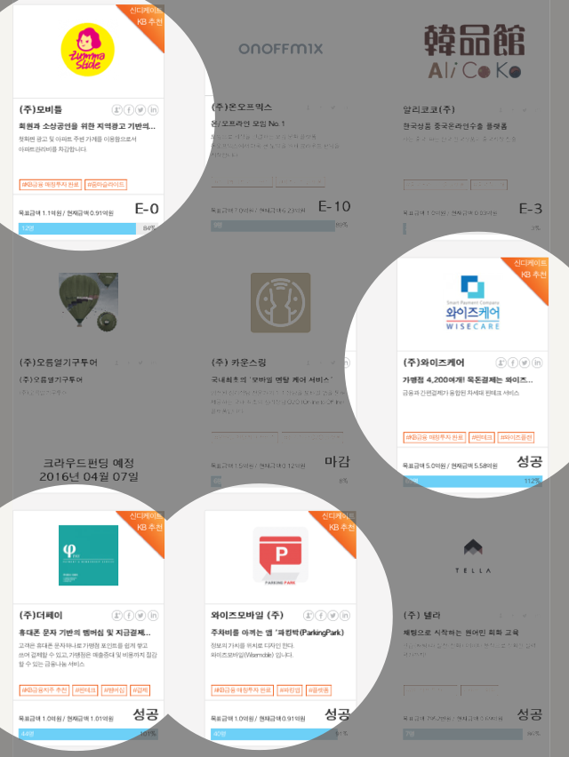

2017-4-4
- 목표 자금금액 대비 104% 초과 달성

KB투자증권(사장 전병조, www.kbsec.co.kr)이 크라우드펀딩을 통해 핀테크 스타트업 기업들을 위한 자금 모집을 성공적으로 이끌었습니다. 지난 1월25일, 일반 투자자들을 대상으로 시행한지 두달여만입니다.
KB금융지주와 공동으로 진행한 펀딩에 참여한 기업은 와이즈케어(목표 5억원), 와이즈모바일(목표 1억원), 더페이(목표 1억원), 모비틀(목표 1.1억원) 등 4곳으로 모두 펀딩 성공 기준인 80%이상을 달성했습니다.
현재까지 모집된 금액은 총8억4천여만원으로 4곳의 총 목표금액인 8억1천만원을 넘어 달성률 104% 기록했습니다. 같은 기간 동안 이뤄진 크라우드펀딩 달성률 54%(목표 26.6억원 대비 14.4억원 모집)과 비교해 큰 차이를 보였습니다.
이번 펀딩의 성공 요인은 KB금융그룹의 긴밀한 협업 체계가 주요했다는 분석입니다. KB금융지주가 계열사와 핀테크기업 간 협업체계 구축을 위해 만든 KB핀테크HUB센터가 선정한 기업에 대해 증권형 크라우드펀딩을 진행한 후, 일정 수준의 금액을 달성한 기업에 대해 KB투자증권이 목표금액과 동일한 금액(업체당 2천5백만원)을 제공하는 메칭투자 방식을 접목한 신개념 핀테크스타트업 투자 프로그램 방식을 사용했습니다.
KB투자증권의 성공적 펀딩으로 KB금융그룹은 핀테크 시장에서 선도적 위치를 구축할 수 있는 기반을 마련했음은 물론 매칭투자 방식의 후원이 핀테크 스타트업 육성과 생태계 조성에 큰 역할을 할 수 있다는 업계의 평가입니다.
KB투자증권은 지난 1월부터 자사의 모바일 동영상 자산관리 애플리케이션인 ‘KB WM CAST’를 통해 스타트업 기업들의 온라인 홍보를 지원하고, 고객들에게 유망 스타트업에 대한 투자정보를 제공하고 있습니다.
이번 크라우드펀딩이 또하나의 증권 발행시장으로 성장할 것으로 예상되며,핀테크 스타트업에 대한 일반인들의 직접 투자가 좀 더 쉬워질 수 있는 계기가 될 뿐 아니라 잠재적 유망 업체 발굴 채널로도 활용할 수 있을 것입니다.
한편 KB금융지주는 펀딩에 성공한 회사중 와이즈모바일, 더페이, 와이즈케어 등 세 곳을 핀테크 신생기업 집중육성 프로젝트인 ‘KB스타터스밸리’ 멤버회사로 지정해 입주공간과 투자 연계 멘토링, 제휴사업 추진등 전방위적인 지원을 아끼지 않을 계획입니다.